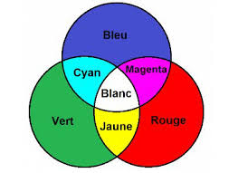
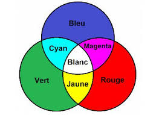

Cours et activités
Chapitre 1: Python
Chapitre 2: Internet
Chapitre 3: Le Web
 Chapitre 4: Les Réseaux Sociaux
Chapitre 5: Le Traitement de données
Chapitre 6: La photografie numérique

Chapitre 7: La géolocalisation
Chapitre 8: Les objets connectés
Chapitre 4: Les Réseaux Sociaux
Chapitre 5: Le Traitement de données
Chapitre 6: La photografie numérique

Chapitre 7: La géolocalisation
Chapitre 8: Les objets connectés
Projets
1. Ma p'tite page web
2. Page web de SNT